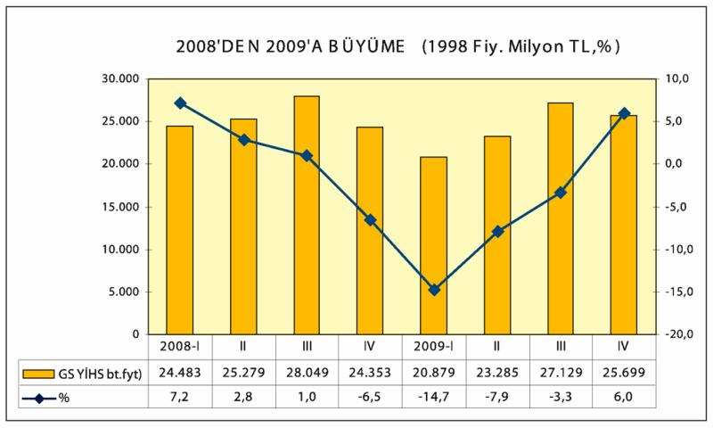

Türkiye'nin 2001 krizinden sonra uyguladığı ekonomik politikalara "düşük kur-yüksek faiz" damgasını vurdu. Dünyada 2002 yılından itibaren başlayan likidite bolluğunun da etkisiyle önemli ölçüde sıcak para çeken Türkiye, 2002-2006 yılları arasında "yüksek bir büyüme dönemi" yaşadı. Sürdürülebilir olmayan ve istihdam yaratmayan bu büyüme dönemi 2007 yılının ikinci çeyreğinden itibaren yavaşlamaya başladı.
Sıcak para girişlerinin yavaşlamasıyla ekonomide başlayan yavaşlama eğilimi, uluslararası finansal krizle birlikte sıcak para çıkışının başlaması nedeniyle 2008 yılından itibaren ise yerini küçülmeye bıraktı. Adeta 2002–2006 yılları arasında şişen balon 2008-2009 yıllarında patladı. 2008 yılını yüzde 1'in altında büyüme ile kapatan Türkiye ekonomisi 2009 yılını ise yüzde 4,7 daralma ile kapadı.
Küresel krizin etkisi altına girilen 2008 yılının son çeyreğinde yüzde 6, 5'lik bir ekonomik küçülmeyle sarsılan Türkiye, 2009 yılına ise savaş yıllarında bile rastlanmayacak bir ekonomik daralma yaşadı. Yılın ilk üç aylık döneminde yüzde 14,7 oranında küçülen Türkiye ekonomisinde yılın ikinci çeyreğinde yüzde 7,9'luk, üçüncü çeyreğinde ise yüzde 3,3'lük küçülme yaşandı. 2009 son çeyreğinin büyümesi yüzde 6'ya ulaşsa da yıllık küçülme yüzde 4,7'yi buldu.
IMF'e göre, 2009 yılında dünyadaki 182 ülkeden 93'ünde ekonomik küçülme, 93'ünde ise büyüme yaşandığı tahmin ediliyor.
Krizden en fazla etkilenen ülkelerden Türkiye, 2010'da da krizden çıkmakta zorlanıyor. "Bankacılık sektöründe sorun olmaması, türev ürünlerin yaygın olmaması" gibi gerekçelerle Türkiye'nin diğer ülkelere göre krizden daha çabuk çıkacağı ileri sürülüyordu, ancak AB'den ihracat pazarlarının açılmaması, iç talebin gıda dışında düşük seyri, toparlanmanın gecikmesinde etkili oldu.

Kaynak: TÜİK
Ancak krizin birinci yılı geride kalırken, diğer gelişmekte olan ülkelerin birçoğundaki toparlanmanın Türkiye'den çok daha hızlı olduğu ortaya çıktı. Türkiye, 2009'da yüzde 4,7 küçülmesiyle, Rusya ve Meksika'dan sonra en fazla küçülen "yükselen gelişmekte olan ülke" oldu.
Çin, Hindistan, Endonezya, Pakistan gibi ülkeler ise uluslararası krize rağmen büyümeyi başaran ülkeler olarak göze çarptı.
Büyümek için dış kaynak girişine bağımlı olan Türkiye'nin, dünyanın yeni bir likidite bolluğuna girmemesi halinde eski yüksek büyüme hızlarına ulaşamayacağı anlaşılıyor.
Türkiye ekonomisi 1923-2002 yılları arasında yıllık ortalama bazda yüzde 4,6 oranında büyüme gösterdi. AKP'nin iktidarda bulunduğu 2002–2009 yılları arasında ise Türkiye ekonomisi ortalama yüzde 4 oranında büyüdü.
AKP dönemindeki yıllık ortalama büyüme hızı Türkiye'nin hem ekonomik hem de siyasi olarak çok daha büyük sorunlar yaşadığı, 1970'li yıllardaki ortalama yüzde 4,8'lik büyüme hızını bile yakalayamadı.
Oysa Türkiye ekonomisinin diğer ülkelerle arasındaki gelişmişlik farkını kapatmak bir yana aynı tutmak için bile yılda ortalama yüzde 5, diğer ülkelerle arasındaki farkı az da olsa azaltabilmesi için yıllık ortalama yüzde 7-8 oranlarında büyüme sağlaması gerekiyor.
Türkiye sürdürülebilir büyümeyi sağlayacak sağlam ekonomik politikalar uygulamaya koyamadığı sürece potansiyelinin altında büyümeye mahkûm olacak.
Türkiye'nin krizde en derin küçülmeyi yaşayan ülkelerden biri olması, sürdürülebilir büyümeyi yakalayamamasından kaynaklanıyor. Sürdürülebilir büyümeyi yakalayamamasının en önemli nedenlerinden birini yetersiz birikim, dolayısıyla yetersiz yatırım oluşturuyor.
Türkiye'ye benzer gelişmekte olan ülkeler, 2002-2007 yıllarını kapsayan dönemde milli gelirinin (GSYH) yüzde 27,3'ü kadar yatırım yaparken Türkiye'de bu oran yüzde 20'de kaldı.
2009-2012 döneminde de Türkiye milli gelirinin yüzde 19'u civarında yatırım yapmayı planlarken, gelişmekte olan ülkeler grubunda bu oranın yüzde 30 olarak gerçekleşeceği öngörülüyor.
Daha yüksek oranda yatırım yaptıkları için diğer gelişmekte olan ülkeler Türkiye'ye göre çok daha yüksek oranda ekonomik büyüme sağlıyor.
Türkiye ekonomisinin büyümesi tümüyle sıcak paranın yörüngesine girdi. Kısa vadeli sermaye hareketlerinin serbest bırakıldığı 1999 yılından sonra net sıcak para girişi yaşanan yıllarda büyüyen Türkiye, sıcak para çıkışı yaşanan yıllarda ise büyük ekonomik krizlerle sarsılıyor ve ekonomi küçülüyor.
Kaynak: TÜİK
15, 2 milyar dolarlık net sıcak para çıkışı yaşanan 2001 yılında yüzde 5, 7 oranında küçülen Türkiye ekonomisi, net sıcak para girişi yaşanan 2003, 2004, 2005, 2006 ve 2007 yıllarında ise büyüdü.
Sıcak paranın şişirdiği balon, sıcak para çıkışının başladığı 2008 yılının üçüncü çeyreğinde patladı. 2009 yılının üçüncü çeyreğinde yüzde 6, 5 oranında küçülen Türkiye ekonomisinin yılın tümündeki büyüme oranı ise yüzde 0,7'ye kadar düştü.
2009'un sıcak para trafiği ve büyüme ilişkisi, yılın ilk ve ikinci yarısında farklı görüntüler yarattı. Mart 2009'a kadar uzaklaşan sıcak para, negatif büyümeye de neden oldu. Yılın ikinci yarısında yeniden dönen sıcak para, bu kez küçülmenin yerini büyümeye bırakmasına ve son çeyrekte yüzde 6 büyümede etkili oldu. Yılın tamamında 85 milyar doları aşan sıcak para stoku, 2009'un tamamında küçülmenin yüzde 4, 7'de kalmasında da etkili oldu.
Türkiye'nin 2002 yılında 230, 5 milyar dolar olan milli geliri 2008 yılında 741,8 milyar dolar düzeyine yükselmişti. 2009 sonu itibariyle milli gelir 618 milyar dolara kadar geriledi.
2009 yılında Türkiye'nin milli gelirinde 2008 yılına göre 124 milyar dolara yakın bir azalma yaşandı.
Türkiye'nin milli gelirinin 2008 yılı seviyesine dönmesi, toparlanmanın zayıflığı yüzünden bir hayli zaman alacak. Hükümetin Orta Vadeli Plan tahminleri gerçekleşirse, 2010 yılında milli gelir 641 milyar dolara çıkacak. 2011 yılında 669 milyar dolarla 2007 seviyesini az da olsa geçmesi beklenen milli gelir 2012 yılında ise 723 milyar dolarla 2007 yılındaki seviyesinin üzerinde ancak 2009 yılındaki seviyesinin altında kalacak.
2002 yılında 3 bin 517 dolar düzeyinde bulunan kişi başına düşen gelir, Türk parasının büyük ölçüde değerlenmesinin de etkisiyle 2008 yılında 10 bin 436 dolara kadar yükselmişti. Ancak 2009 yılında kişi başına düşen gelirde 1.846 dolarlık bir azalma yaşandı. Kişi başına düşen gelirin, hem ekonomide yaşanan küçülme hem de Türk parasının değer kaybı yüzünden 2009 yılında yeniden 8 bin 590 dolara kadar geriledi.
Kaynak: TÜİK
Türkiye'nin 2008 yılındaki kişi başına düşen gelir seviyesine 2012 yılına kadar ulaşması mümkün görünmüyor. Orta Vadeli Program'da (2009–1012) yer alan tahminlere göre kişi başına gelir 2012 yılında en fazla 9 bin 732 dolar olabilecek.
Son yıllarda büyüme hızı önemli ölçüde azalan sektörler 2008 yılının son çeyreğiyle birlikte küçülmeye başladı.
2009 döneminde tarım sektörü yüzde 3,3 büyürken, imalat sanayii, son çeyrekte toparlanma yaşasa da, yılın tamamında yüzde 7,2 küçüldü. 2009'da inşaat yüzde 16, 3 daralma ile en çok küçülen sektör olurken ticarette de yüzde 10 daralma yaşandı. 2009'un tamamında büyüyen sektörler ise yüzde 4'e yakın büyüme ile otel ve lokanta, yani turizm sektörü ve yüzde 8,5 büyüme ile mali sektör oldu.
IMF'nin Ekim 2009'da yaptığı tahminlere göre 2008 yılında büyüme hızı yüzde 0,7'ye kadar gerileyen Türkiye ekonomisi 2009 yılında yüzde 6,5 oranında küçülecekti (Ancak IMF öngörüsü tutmadı ve gerçekleşme yüzde 4,7 oldu).
IMF'nin tahminleri Türkiye ekonomisinde toparlanmanın uzun süreceğini gösteriyordu. Büyüme hızı 2010 yılında yüzde 3,7, 2011 yılında yüzde 4,2012, 2013 ve 2014 yıllarında ise büyüme hızı yüzde 3,5'te kalacaktı.
Türkiye ekonomisinin işsizlik sorununu kontrol edebilmesi için yüzde 7'nin üzerinde büyümesi gerektiği savunuluyor.
| ALT SEKTÖRLER İTİBARİYLE BÜYÜME; 2008-2009, % | ||||||
| ALT SEKTÖRLER | 2008 | 2009-I | 2009-II | 2009-III | 2009-VI | 2009 |
| Tarım, avcılık ve ormancılık | 4, 6 | 0, 8 | 6, 5 | 3, 6 | 1, 5 | 3, 3 |
| Madencilik ve Taşocakçılığı | 5, 4 | -13, 0 | -15, 3 | -3, 2 | 3, 5 | -6, 7 |
| İmalat Sanayi | -0, 1 | -22, 3 | -11, 7 | -4, 5 | 12, 8 | -7, 2 |
| Elektrik, gaz | 3, 7 | -6, 1 | -6, 0 | -4, 8 | 1, 5 | -3, 5 |
| İnşaat | -8, 1 | -18, 6 | -21, 1 | -18, 3 | -6, 6 | -16, 3 |
| Toptan ve perakende ticaret | -1, 5 | -26, 2 | -15, 2 | -7, 2 | 10, 3 | -10, 4 |
| Oteller ve Lokantalar | -2, 0 | 2, 7 | 1, 5 | 4, 7 | 5, 5 | 3, 9 |
| Ulaştırma, depolama ve haberleşme | 1, 5 | -16, 3 | -10, 3 | -5, 0 | 3, 6 | -7, 1 |
| Mali aracı kuruluşların faaliyetleri | 9, 1 | 10, 8 | 7, 5 | 7, 8 | 8, 1 | 8, 5 |
| Sektörler Toplamı | 1, 3 | -12, 1 | -6, 8 | -1, 7 | 6, 4 | -3, 5 |
| Gayri Safi Yurtiçi Hasıla | 0, 7 | -14, 5 | -7, 7 | -2, 9 | 6, 0 | -4, 7 |
Kaynak: TÜİK